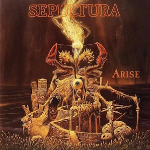

Sepultura's History

Sepultura's WikiSepultura is the first band formed by Max Cavalera. The name is Brazilian Portuguese for "grave." Max Cavalera, while playing a very important role in founding the band, left in 1996, with Igor Cavalera leaving a decade later in 2006. They disbanded this year, in 2026, after a farewell tour.
Sepultura's Albums
- Morbid Visions (1986)
- Schizophrenia (1987)
- Beneath the Remains (1989)
- Arise (1991)
- Chaos A.D. (1993)
- Roots (1996)
- Against (1998)
- Nation (2001)
- Roorback (2003)
- Dante XXI (2006)
- A-Lex (2009)
- Kairos (2011)
- The Mediator Between Head and Hands Must Be the Heart (2013)
- Machine Messiah (2017)
- Quadra (2020)